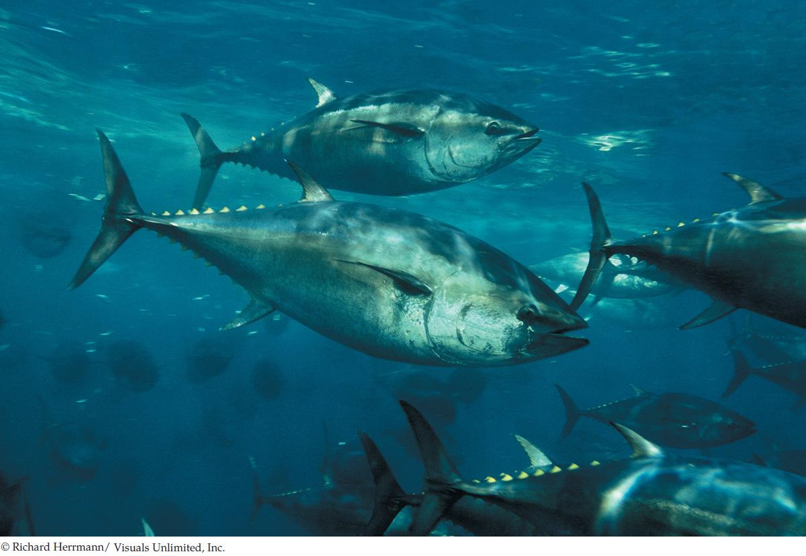

| 32 | Circulation |
|

Bluefin tuna are vigorous swimmers. They need more than strong swimming muscles to swim, because the muscles require ATP at high rates and thus need O2 at high rates. The circulatory system bears responsibility for moving O2 rapidly to the muscles from the gills.
|
If tuna, such as these bluefin tuna, lived on land, they would be as famous as wolves. Like wolves, bluefin tuna are carnivores that hunt in groups and depend on speed, strength, and awesome teeth to attack prey: in their case, other fish. Tuna are strong, mobile predators at the top of the food chain.
Judging by the length of time spent in motion, tuna are actually more mobile than wolves. Using their red swimming muscles, they swim continuously, day and night, at speeds of one to two body lengths per second. For bluefin, this means traveling continuously at speeds of 2–6 meters per second, interrupted at times by anaerobically fueled bursts of attack swimming at far higher speeds. Tuna rank with the elite endurance athletes of the sea.
To meet the oxygen (O2) demands of their vigorous lifestyle, tuna have evolved some of the most elaborate gills known in fish: gills that can take up O2 at high rates from seawater. However, the swimming muscles that must receive O2 rapidly for endurance swimming are located in the abdomen, far from the gills.
Rapid circulation of blood is thus as important as elaborate gills for the steady, endurance swimming of tuna. As stressed in Concept 31.1, the flow of blood through an animal’s circulatory system is a form of bulk flow. As such, it can move substances at high rates over long distances within the animal’s body. Tuna researcher John Magnuson once commented that tuna are “astounding bundles of adaptations for efficient and rapid swimming.” One of those adaptations is a high-performance circulatory system that can transport O2 at high rates from the gills to the swimming muscles.
Tuna belong to the small set of fish that have warm bodies, and in this regard their circulatory system plays a second important role in swimming. In more than 99 percent of fish, body temperature equals water temperature. Only a tiny minority of fish are warm-bodied as tuna are. The entire body of a tuna is not warm, however. Just certain parts are. The red swimming muscles represent the largest mass of warm tissue. In bluefin tuna, those muscles remain at 25–35°C even when the ocean is as cold as 5°C. This warming of the red swimming muscles is believed to help the muscles maintain high power outputs. A specialized arrangement of blood vessels helps the swimming muscles retain heat and stay warm.
How can the arrangement of blood vessels help warm the swimming muscles in warm-bodied fish such as tuna?